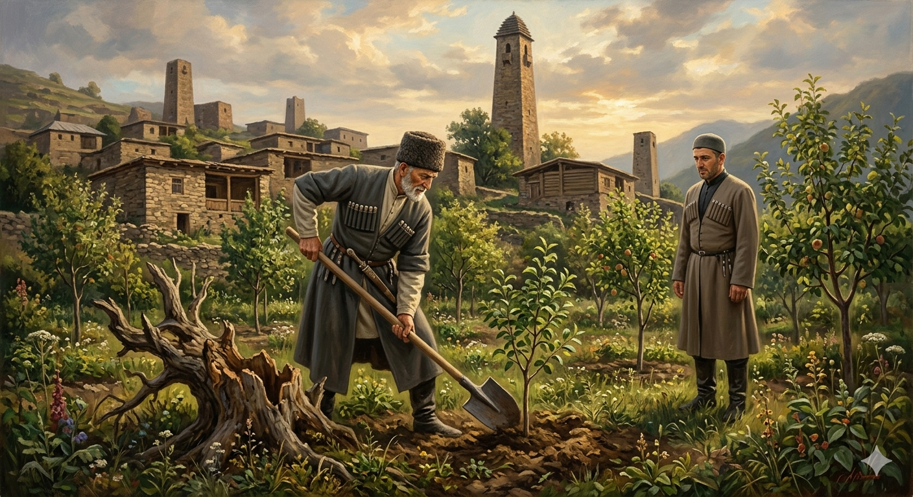

И.А. Дахкильгов. Хьехаме дувцарш - поучительные рассказы-притчи.
И.А. Дахкильгов. Хьехаме дувцарш - поучительные рассказы-притчи. Из ингушского фольклора.

Дас къайлагIа баь хьехам
Цхьан дас ший воӀ боккхача цхьан мехка деша вахийта хиннав. Циггач дийша а ваьнна, воккха хьаким хиннав воӀах. Доккха рузкъа долаш, дукха доттагӀий болаш, хьал тоаденна вахаш хиннав из. Ший къавенна да дагавохаш хиннавац цунна. Массехка шу даьлча, воӀо аьннар ца деш хьайзаб цун новкъостийи доттагӀийи ба яхараш, рузкъа а мичо дода ца ховш дӀааха даьлар. Геттар гӀулакх телхача, воӀо ший тешаме вола гӀонча вахийтав ший да волча, фу дича бакъахьа да ше, аьнна хатта. ГӀонча дӀакхаьчача, беша воаллаш хиннав воккха саг. Къаенна, тишъенна гаьнаш дӀайоахаш хиннай цо, царна когаметта дӀаювш хиннай къона гаьнаш. Шийна тӀадила гӀулакх гӀончас дӀадийцача, воккхача саго хӀама аьннадац. ШозлагӀа хаьттача а йист хиннавац. ГӀончас ше дӀавода аьлча, тӀаккха аьннад воккхача саго: "Укх беша со фу деш воаллар цу са воӀага дӀадийцача, ваьннав хьо". Иштта а иштта а да, аьнна, гӀончас шийга дӀадийцача, воӀо кхетадаьд цу дешай маӀан. Шийна уллув кхийста мекъбенна, биза бола тешам байна новкъостий дӀа а баьха, къона а кадай а бола кердабараш уллув баьхаб. Циггач балхара гӀулакх тоаденнад цун, рузкъа а юха хьаӀейнад. Шийна юхе воккха саг Ӏо а хоаваь, из боча лелаваьв воӀо.
РУССКИЙ
Тайный совет отца
Некий отец отправил своего сына учиться в другую большую страну. Выучился он и стал там большим вельможей, разбогател и приобрел много друзей. От хорошей жизни он почти забыл своего состарившегося отца. Прошло несколько лет, сподвижники-друзья перестали слушать его указания, да и богатство его стало уходить неизвестно куда. Когда же дела совсем испортились, сын послал своего сподвижника к отцу за советом. Когда сподвижник явился, старик работал в саду. Он вырубал старые деревья и на их место сажал молодые. Сподвижник передал просьбу сына, но старик-отец ничего не ответил. Просьба была повторена. И тут старик промолчал. Когда же сподвижник собрался уходить, старик ему сказал: "Достаточно тебе будет рассказать сыну о том, чем я занимаюсь в этом саду". Эти слова дошли до сына. Он понял их тайный смысл и отстранил от дел и от себя разжиревших, обленившихся и разбогатевших подчиненных. Вместо них он набрал молодых и активных сподвижников. Дела его поправились, и он вновь разбогател. Сын привез отца к себе и высоко чтил его.
ENGLISH
A Father's Secret Advice
A certain father sent his son to study in a different country. He completed his studies, became a high-ranking official, grew rich and made many friends. Lost in the pleasures of his new life, he almost forgot his ageing father. Several years passed, his friends and associates stopped heeding his instructions and his wealth began to disappear. When everything had gone wrong, the son sent an associate to his father for advice. When the associate arrived, the old man was working in the garden. He was cutting down old trees and planting young ones in their place. The associate conveyed the son's request, but the old man said nothing. The request was repeated. Still the old man remained silent. As the associate was about to leave, the old man said to him, 'Just tell my son what I am doing in this garden.' The son heard these words. He understood their hidden meaning and dismissed those subordinates who had become complacent and wealthy. In their place, he recruited young, active associates. His business improved and he became wealthy once more. He brought his father to live with him and held him in high esteem.
НОХЧИЙН
Дас къайлах бина хьехам
Цхьана дас шен воӀ боккхачу цхьана махка деша вахийтина хилла. Цигахь дешна а ваьлла, воккха хьаькам хилла воӀах. Доккха рицкъ долуш, дукха доттагӀий болуш, хьал тоделла вехаш хилла иза. Шен къанвелла да дагавогӀуш хилла вац цунна. Массех шо даьлча, воӀа аьлларг ца деш хьаьвзина цуьнан накъостий доттагӀий бу бохурш, рицкъ а мича доьду ца хууш дӀаэха дуьлира. Гуттар гӀуллакх телхича, воӀа шен тешаме волу гӀоьнча вахийтина шен да волчу, хӀун дича бакъахь ду ша, аьлла хатта. ГӀоьнча дӀакхаьчча, бешахь воллуш хилла воккха стаг. Къанделла, тишделла дитташ дӀадохуш хилла цо, церан метта дӀадуьш хилла къона дитташ. Шена тӀедиллина гӀуллакх гӀоьнчас дӀадийцича, воккхачу стага хӀумма аьлла дац. ШозлагӀа хаьттича а вист хилла вац. ГӀоьнчас ша дӀавоьду аьлча, тӀаккха аьлла воккхачу стага: "ХӀокху бешахь со хӀун деш воллар цу сан воӀе дӀадийцича, ваьлла хьо". Иштта а иштта а ду, аьлла, гӀоьнчас шега дӀадийцича, воӀ кхетта цу дешнийн маьӀнех. Шена улле кхерста мало йоллу, буьзна болу тешам байна накъостий дӀа а баьхна, къона а каде а болу керла берш улле баьхна. Циггахь балхара гӀуллакх тоделла цуьнан, рицкъ а йуха схьадеана. Шена йуххе воккха стаг охьа а хаийна, иза боча лелийна воӀа.
ПОГОВОРКИ